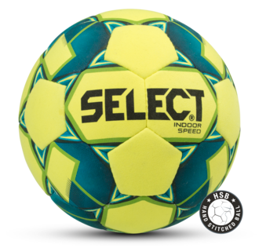
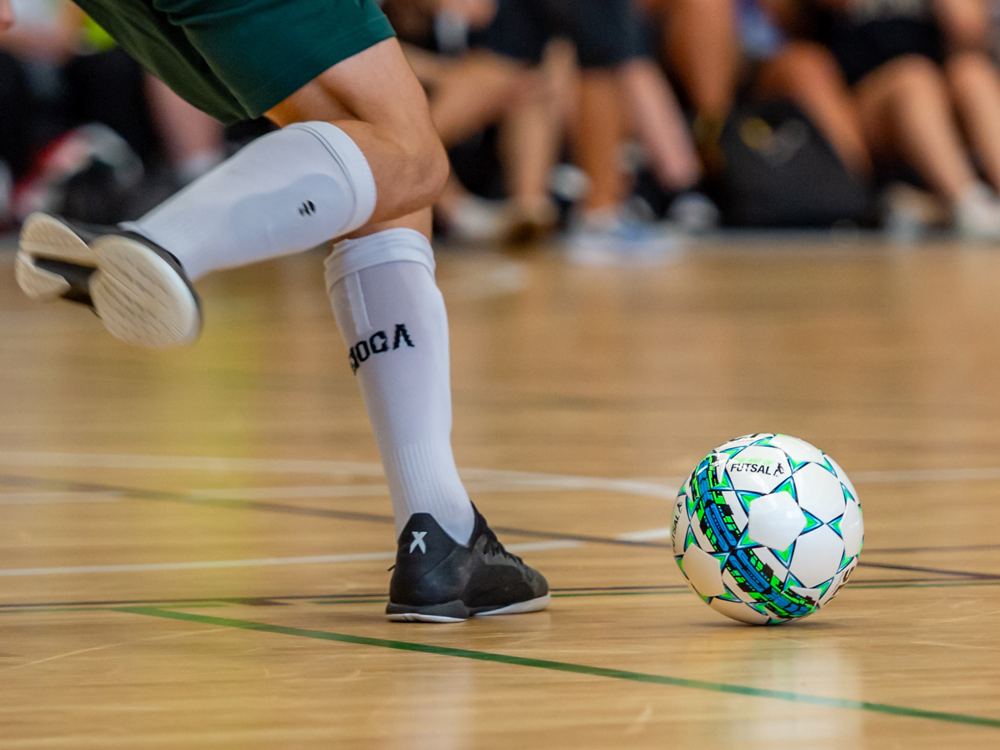
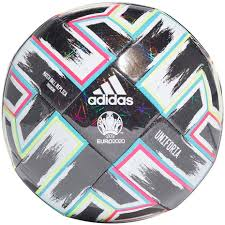
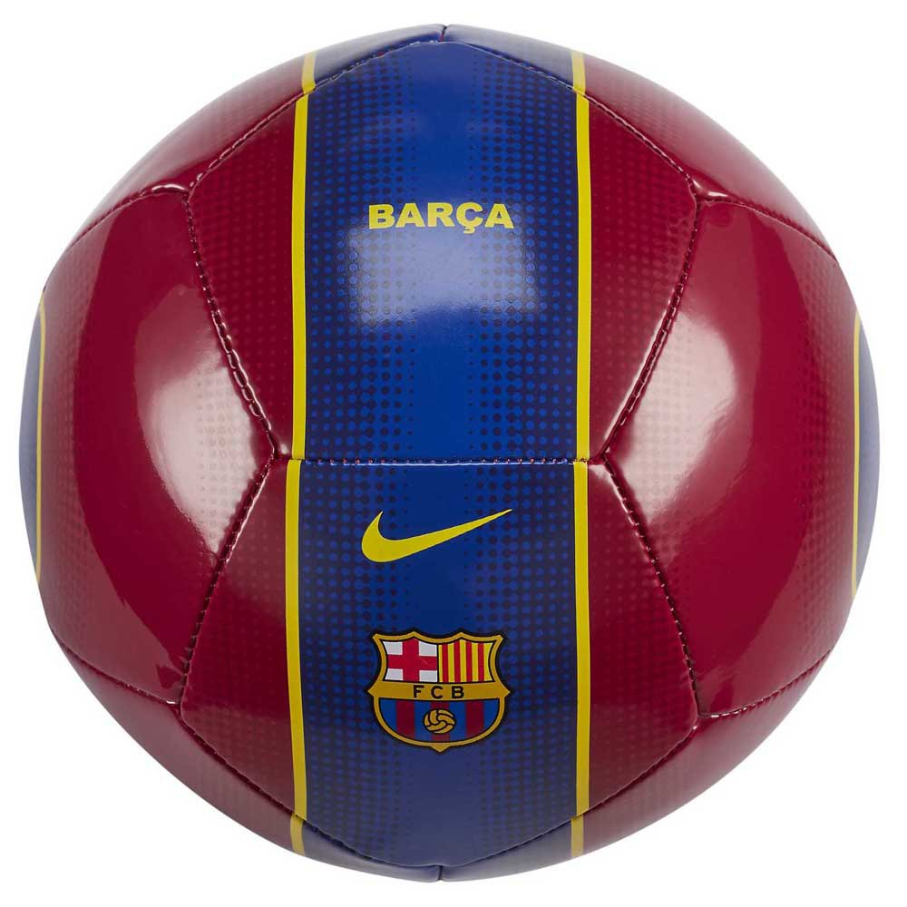

Construction
Today's footballs are much more complex than past footballs. Most modern footballs consist of twelve regular pentagonal and twenty regular hexagonal panels positioned in a truncated icosahedron spherical geometry. Some premium-grade 32-panel balls use non-regular polygons to give a closer approximation to sphericality. The inside of the football is made up of a latex or butyl rubber bladder which enables the football to be pressurised. The ball's outside is made of leather, synthetic leather, polyurethane or PVC panels. The surface can be textured, weaved or embossed for greater control and touch. The panel pairs are either machine-stitched, hand-stitched or thermo-bonded (glued and bonded by heat) along the edge. To prevent water absorption balls may be specially coated, or the stitches bonded with glue.
Size and Weight
Regulation size and weight for a soccer ball is a circumference of 68–70 cm (27–28 in) and a weight of between 410–450 g (14–16 oz). The ball should be inflated to a pressure of 0.6 and 1.1 bars (8.7 and 16.0 psi) at sea level. This is known as "Size 5". Smaller balls, sizes 1, 3 and 4 are also produced. These are designed for younger players or as training tools.

Types of balls
There are a number of different types of football balls depending on the match and turf including training footballs, match footballs, professional match footballs, beach footballs, street footballs, indoor footballs, turf balls, futsal footballs and mini/skills footballs.
Professional Match Balls

Professional match balls are developed with top professional clubs to maximize players natural abilities and skills. They are FIFA-approved for use at the highest professional and international levels and designed for performance, exact specifications, great accuracy, speed and control. Air retention, water-resistance, and performance are far superior when compared to a training ball.
Indoor Soccer Balls

Indoor soccer salls come in the same sizes as the outdoor soccer balls, but are designed to have less bounce and rebound in them, making it possible to control the ball on a smaller court or indoor arena. The cover of an indoor ball is also the strongest of any category, so it can withstand the hard rebound impact on the court flooring and wall surfaces.
Futsal Soccer Balls

Futsal Soccer Balls differ from typical soccer balls in that the bladder is filled with foam. That makes the ball heavier and with less bounce for use on the hard futsal playing surface. Besides that, a futsal soccer ball is smaller in size than a football used in the soccer field.
Traning Footballs

Training footballs are tough and highly durable balls for extended use. Made of robust materials for use on all playing surfaces and used by players at any level. Practice balls are the least expensive balls when compared with match type soccer balls.
Turf Balls

Turf salls are specifically designed to work on artificial surfaces that mimic grass. They are durable and reasonably affordable, but tend to skip more when used on a natural pitch.
Promotional Balls

Promotional Balls are usually made to promote a name brand, organization or event.
Suppliers
Many companies throughout the world produce footballs. The earliest balls were made by local suppliers where the game was played. It is estimated that 55% of all footballs are made in Sialkot, Pakistan, with other major producers being China and India.
As a response to the problems with the balls in the 1962 FIFA World Cup, Adidas created the Adidas Santiago this led to Adidas winning the contract to supply the match balls for all official FIFA and UEFA matches, which they have held since the 1970s, and also for the Olympic Games. They also supply the ball for the UEFA Champions League which is called the Adidas Finale.